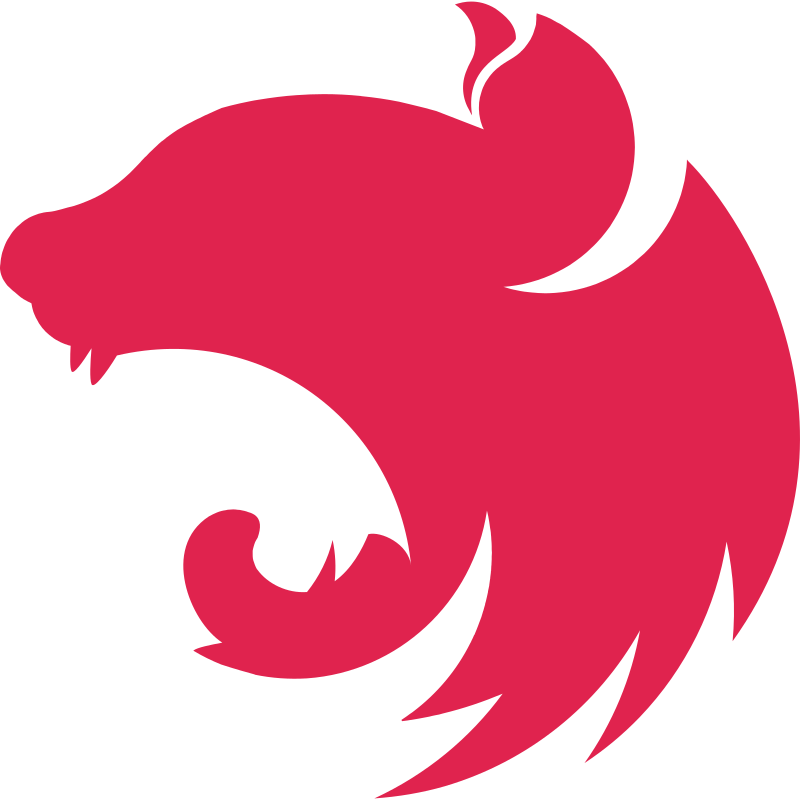

D’abord le produit, ensuite le code.
Un atelier produit pour cadrer le besoin. Un prototype pour valider les hypothèses avant d’écrire une ligne. Puis du code — sous œil senior, sur une stack qui tient : Rails, Next.js, Postgres, Docker.
Notre arsenal préféré
Rails
Next.js

NestJS